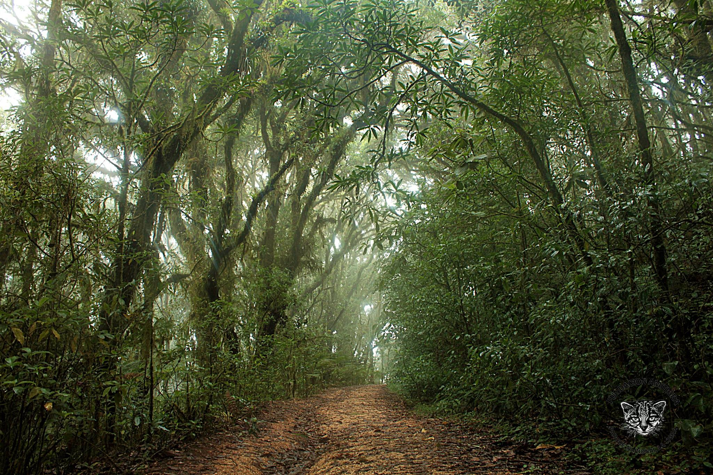
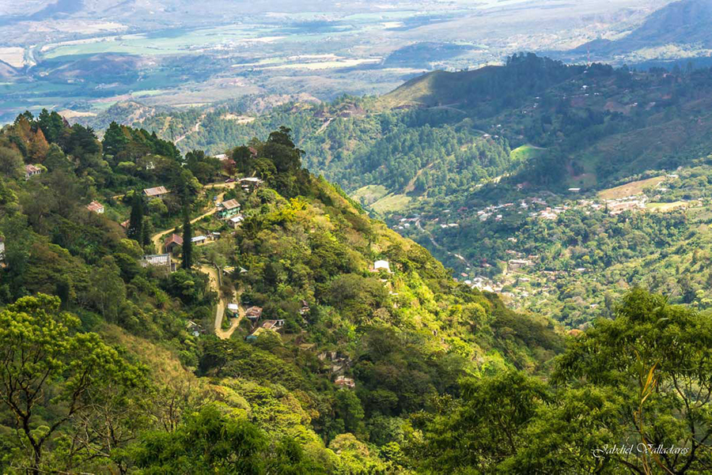
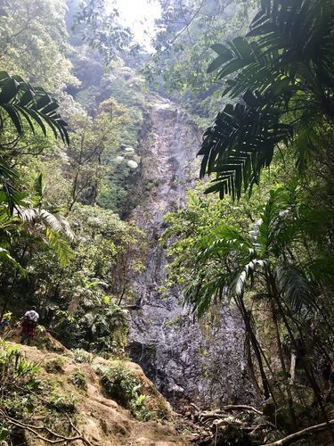
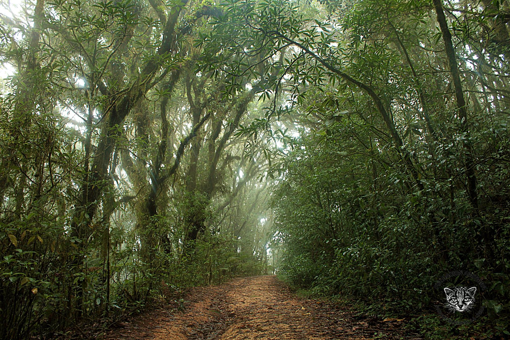
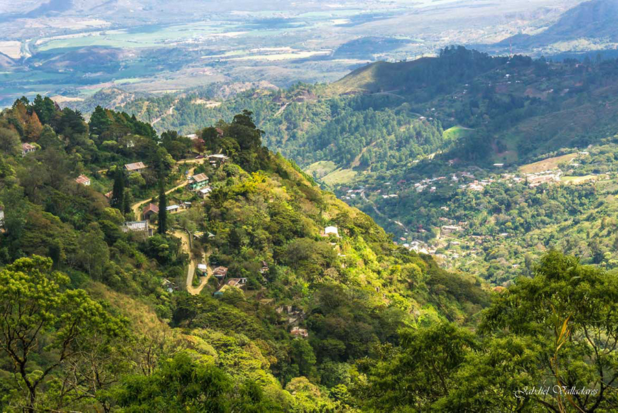
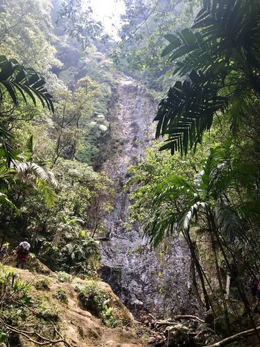

Biodiversidad:El parque alberga gran diversidad de especies como: tucanes, monos, tapires, pumas,quetzal y además alberga una gran cantidad de insectos y escarabajos.Los helechos son otra atracción principal del parque que miden 20 metros de altura.
Geografía:La Tigra es un bosque nublado con una superficie de 328 kilómetros cuadrados (127 millas cuadradas). Tiene una altitud de entre 1800 y 2185 metros. Está ubicado a 25 km (16 millas) de Tegucigalpa, y con a mayor extensión territorial...
Beneficios:Además de su exuberante belleza natural y con un pasado histórico importante, la montaña de La Tigra, con su inmensa vegetación de bosque tropical nuboso también proporciona más del 30 de las necesidades de la ciudad capital, Tegucigalpa, y el 100 de las comunidades aledañas ha sido protegido desde los años 1920, prueba de ello son los vertederos hidráulico de Jutiapa.
 




